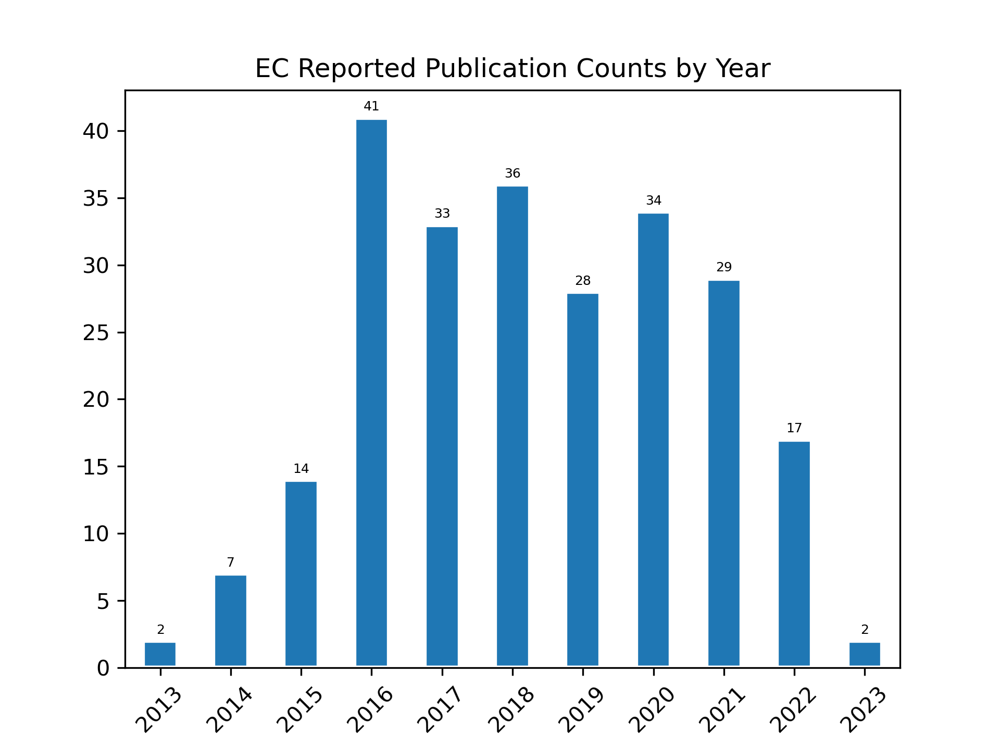
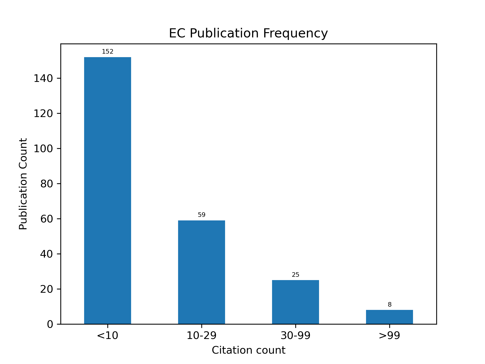
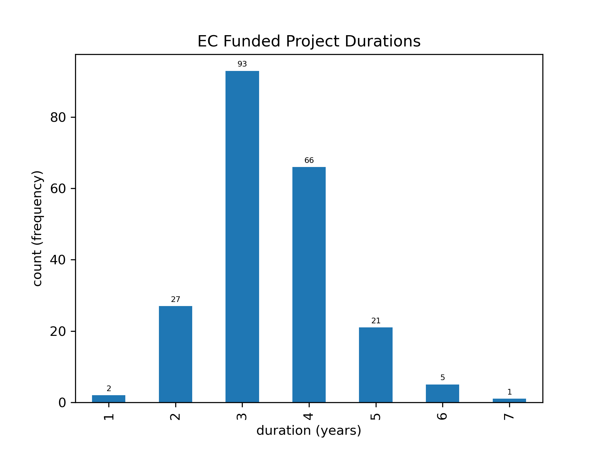

Publications-Oriented Outcomes
Contents
Publications-Oriented Outcomes#
Top 10 projects sorted by number of publications give insight into how project-level outcomes compare. This gives us a view into the relative publication outputs of funded projects and says nothing of non-publication outputs (software, data, posters, workshops, etc.).
Highlights#
Publication Highlights
total papers analysed : 245
total citations : 4301
mean cites per paper : 17.55
median cites per paper : 6aa.00
the top 10 papers produced 42% of all citations
the top paper produced over 375 citations :
Yang, C., Q. Huang, Z. Li, K. Liu, and F. Hu, 2017: Big Data and cloud computing: innovation opportunities and challenges. International Journal of Digital Earth, 10, 13–53, https://doi.org/10.1080/17538947.2016.1239771.
TOP CITED PAPER#
2017 Yang paper from the ECITE project (Collaborative project IDs: 1541039,1540998, 1541049):
375 total citations
Yang, C., Q. Huang, Z. Li, K. Liu, and F. Hu, 2017: Big Data and cloud computing: innovation opportunities and challenges. International Journal of Digital Earth, 10, 13–53, https://doi.org/10.1080/17538947.2016.1239771.
ABSTRACT:
Big Data has emerged in the past few years as a new paradigm providing abundant data and opportunities to improve and/or enable research and decision-support applications with unprecedented value for digital earth applications including business, sciences and engineering. At the same time, Big Data presents challenges for digital earth to store, transport, process, mine and serve the data. Cloud computing provides fundamental support to address the challenges with shared computing resources including computing, storage, networking and analytical software; the application of these resources has fostered impressive Big Data advancements. This paper surveys the two frontiers – Big Data and cloud computing – and reviews the advantages and consequences of utilizing cloud computing to tackling Big Data in the digital earth and relevant science domains. From the aspects of a general introduction, sources, challenges, technology status and research opportunities, the following observations are offered: (i) cloud computing and Big Data enable science discoveries and application developments; (ii) cloud computing provides major solutions for Big Data; (iii) Big Data, spatiotemporal thinking and various application domains drive the advancement of cloud computing and relevant technologies with new requirements; (iv) intrinsic spatiotemporal principles of Big Data and geospatial sciences provide the source for finding technical and theoretical solutions to optimize cloud computing and processing Big Data; (v) open availability of Big Data and processing capability pose social challenges of geospatial significance and (vi) a weave of innovations is transforming Big Data into geospatial research, engineering and business values. This review introduces future innovations and a research agenda for cloud computing supporting the transformation of the volume, velocity, variety and veracity into values of Big Data for local to global digital earth science and applications.
Tables#
TOP 10 MOST CITED PAPERS#
top 10 publications data files:
[csv (download)]|[markdown (.md) (download)]all publications data files:
[csv (download)]|[markdown (.md) (download)]
DOI |
Cites |
Citation |
|---|---|---|
10.1080/17538947.2016.1239771 |
368 |
Yang, C., Huang, Q., Li, Z., Liu, K., & Hu, F. (2016). Big Data and cloud computing: innovation opportunities and challenges. International Journal of Digital Earth, 10(1), 13–53. https://doi.org/10.1080/17538947.2016.1239771 |
10.1002/2017GL074954 |
354 |
Morlighem, M., Williams, C. N., Rignot, E., An, L., Arndt, J. E., Bamber, J. L., Catania, G., Chauché, N., Dowdeswell, J. A., Dorschel, B., Fenty, I., Hogan, K., Howat, I., Hubbard, A., Jakobsson, M., Jordan, T. M., Kjeldsen, K. K., Millan, R., Mayer, L., … Zinglersen, K. B. (2017). BedMachine v3: Complete Bed Topography and Ocean Bathymetry Mapping of Greenland From Multibeam Echo Sounding Combined With Mass Conservation. Geophysical Research Letters, 44(21). Portico. https://doi.org/10.1002/2017gl074954 |
10.1038/nbt.4306 |
228 |
Roux, S., Adriaenssens, E. M., Dutilh, B. E., Koonin, E. V., Kropinski, A. M., Krupovic, M., Kuhn, J. H., Lavigne, R., Brister, J. R., Varsani, A., Amid, C., Aziz, R. K., Bordenstein, S. R., Bork, P., Breitbart, M., Cochrane, G. R., Daly, R. A., Desnues, C., Duhaime, M. B., … Eloe-Fadrosh, E. A. (2018). Minimum Information about an Uncultivated Virus Genome (MIUViG). Nature Biotechnology, 37(1), 29–37. https://doi.org/10.1038/nbt.4306 |
10.1038/sdata.2017.88 |
181 |
(2017). A global multiproxy database for temperature reconstructions of the Common Era. Scientific Data, 4(1). https://doi.org/10.1038/sdata.2017.88 |
10.1016/j.renene.2017.02.052 |
139 |
Cervone, G., Clemente-Harding, L., Alessandrini, S., & Delle Monache, L. (2017). Short-term photovoltaic power forecasting using Artificial Neural Networks and an Analog Ensemble. Renewable Energy, 108, 274–286. https://doi.org/10.1016/j.renene.2017.02.052 |
10.1017/qua.2017.105 |
134 |
Williams, J. W., Grimm, E. C., Blois, J. L., Charles, D. F., Davis, E. B., Goring, S. J., Graham, R. W., Smith, A. J., Anderson, M., Arroyo-Cabrales, J., Ashworth, A. C., Betancourt, J. L., Bills, B. W., Booth, R. K., Buckland, P. I., Curry, B. B., Giesecke, T., Jackson, S. T., Latorre, C., … Takahara, H. (2018). The Neotoma Paleoecology Database, a multiproxy, international, community-curated data resource. Quaternary Research, 89(1), 156–177. https://doi.org/10.1017/qua.2017.105 |
10.1016/j.compenvurbsys.2016.10.010 |
111 |
Yang, C., Yu, M., Hu, F., Jiang, Y., & Li, Y. (2017). Utilizing Cloud Computing to address big geospatial data challenges. Computers, Environment and Urban Systems, 61, 120–128. https://doi.org/10.1016/j.compenvurbsys.2016.10.010 |
10.1002/2015EA000136 |
93 |
Gil, Y., David, C. H., Demir, I., Essawy, B. T., Fulweiler, R. W., Goodall, J. L., Karlstrom, L., Lee, H., Mills, H. J., Oh, J., Pierce, S. A., Pope, A., Tzeng, M. W., Villamizar, S. R., & Yu, X. (2016). Toward the Geoscience Paper of the Future: Best practices for documenting and sharing research from data to software to provenance. Earth and Space Science, 3(10), 388–415. Portico. https://doi.org/10.1002/2015ea000136 |
10.1093/biosci/biy068 |
89 |
Farley, S. S., Dawson, A., Goring, S. J., & Williams, J. W. (2018). Situating Ecology as a Big-Data Science: Current Advances, Challenges, and Solutions. BioScience, 68(8), 563–576. https://doi.org/10.1093/biosci/biy068 |
10.2134/jeq2014.05.0220 |
78 |
Radcliffe, D. E., Reid, D. K., Blombäck, K., Bolster, C. H., Collick, A. S., Easton, Z. M., Francesconi, W., Fuka, D. R., Johnsson, H., King, K., Larsbo, M., Youssef, M. A., Mulkey, A. S., Nelson, N. O., Persson, K., Ramirez-Avila, J. J., Schmieder, F., & Smith, D. R. (2015). Applicability of Models to Predict Phosphorus Losses in Drained Fields: A Review. Journal of Environmental Quality, 44(2), 614–628. Portico. https://doi.org/10.2134/jeq2014.05.0220 |
Charts and Graphs#
download
[png]
![[png]](../_downloads/5e0062fdeb39b04b41ef9dd721a274a2/fig_publications_by_year.png){kind=link}

download
[png]
![[png]](../_downloads/08f8a12b2c40f6bcacba63b2650e5404/fig_publications_citation_density.png){kind=link}
#
A number of projects produced a small number of publications, and a few produced a lot. This chart shows the frequency (number of projects) on the x-axis and the publication count on the y-axis. It is clear, a small number of projects generate more than 10 publications, while the vast majority produced fewer than 10.

[png (download)]Many different projects were funded over the course of the EC program. This chart shows that the Building Block projects produced the largest number of papers, and this is expected since they were the largest category of funded project type.download png (small), png (large)
![[png (download)]](../_downloads/d4f566e36edc33102f71dfec648ec824/fig_ec_project_duration.png){kind=link}
Interpretation#
The most highly cited papers in this corpus were mostly written between 2016-2018, which is consistent with the literature for citation accumulation: distal papers have had more time to accumulate citations than those more recently published. One paper each from 2019 and 2020 do show up at the bottom of this list, indicating that they are getting good attention in their initial years.
A weak pattern seems to have emerged in the highly cited papers: two types of papers appear more common – data and programmatic papers.
Data papers#
Data papers that present details about new data sets are important community assets. A hypothesis for further analysis is that these papers are becoming highly cited because the data they describe are getting significant use within their target communities. Three examples are given:
BedMachine v3: Complete Bed Topography and Ocean Bathymetry Mapping of Greenland From Multibeam Echo Sounding Combined With Mass Conservation - 336 citations
A global multiproxy database for temperature reconstructions of the Common Era - 167 citations The Neotoma Paleoecology Database, a multiproxy, international, community-curated data resource - 120 citations
The Arctic System Reanalysis, Version 2 - 65 citations
Programmatic papers#
Programmatic papers that discuss overarching sets of issues that are prominent for certain high-profile topics. These papers may summarize trends, present prominent challenges and research questions, and discuss programmatic opportunities for communities to pursue with respect to certain research areas.
Big Data and cloud computing: innovation opportunities and challenges - 344 citations
Minimum Information about an Uncultivated Virus Genome (MIUViG) - 206 citations
Toward the Geoscience Paper of the Future: Best practices for documenting and sharing research from data to software to provenance - 91 citations
Situating Ecology as a Big-Data Science: Current Advances, Challenges, and Solutions - 71 citations
Analysis Notebooks#
01a_basic_publication_analysis.ipynb